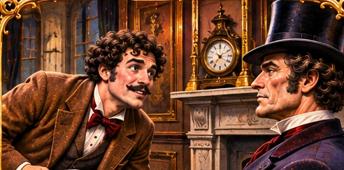

ch01-passepartout-introduction-study

باسبارتو يتقدم للتعريف بنفسه أمام فوغ (قصاصة مراجعة فقط).
Chapter 1 · paragraph 20 · original native crop 492×243A rap at this moment sounded on the door of the cosy apartment where Phileas Fogg was seated, and James Forster, the dismissed servant, appeared. "The new servant," said he. A young man of thirty advanced and bowed.
في تلك اللحظة سُمعت طرقة على باب الغرفة المريحة التي يجلس فيها فوغ، وظهر جيمس فورستر، الخادم الذي صُرف من عمله. قال: «الخادم الجديد». فتقدم شاب في الثلاثين من عمره وانحنى احترامًا.Editorial rejection reasons
- Fogg hairstyle and facial hair do not match established lighter-haired bearded character reference
- Original scene includes dismissed James Forster, but generated scene omits him
- Scene contains a top hat worn indoors; needs historical review